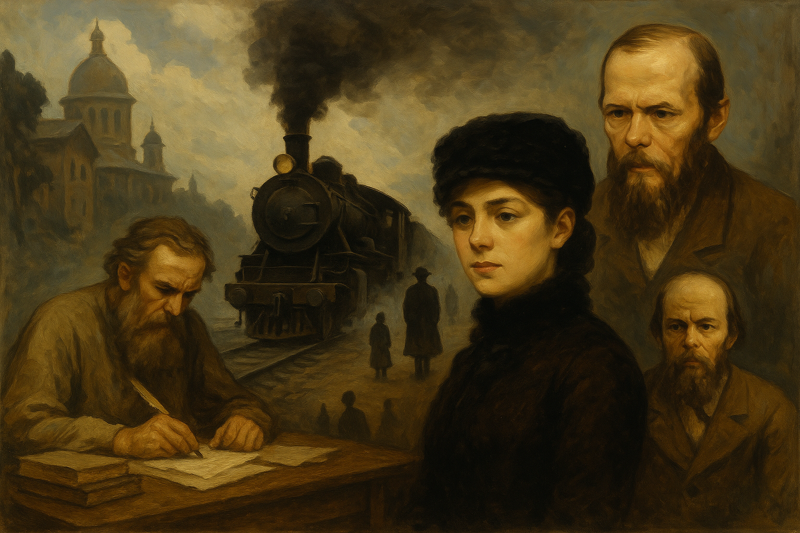

Bevezető
Az orosz realista irodalom a 19. század második felében bontakozott ki, amikor az orosz társadalom és kultúra drámai átalakuláson ment át. A realizmus célja az emberi természet, a társadalmi valóság és erkölcsi dilemmák ábrázolása volt. E korszak kiemelkedő írói közé tartozik Tolsztoj, Dosztojevszkij, Csehov és Bulgakov.
Mi jellemzi az orosz realizmust?
- Valósághű társadalmi ábrázolás
- Mély lélektani elemzés
- Etikai és filozófiai kérdések
- Erős jellemű, belső konfliktusokkal küzdő szereplők
- Orosz társadalom és vallás kritikája
Kép, videó és hang
Videó: A realizmus története
Hangrészlet: Anna Karenina – LibriVox (közkincs!)
Főbb szerzők és műveik
| Szerző | Jelentős művek |
|---|---|
| Lev Tolsztoj | Háború és béke, Anna Karenina |
| Fjodor Dosztojevszkij | Bűn és bűnhődés, A Karamazov testvérek |
| Anton Csehov | Sirály, Cseresznyéskert |
| Mihail Bulgakov | A Mester és Margarita, Kutyaszív |